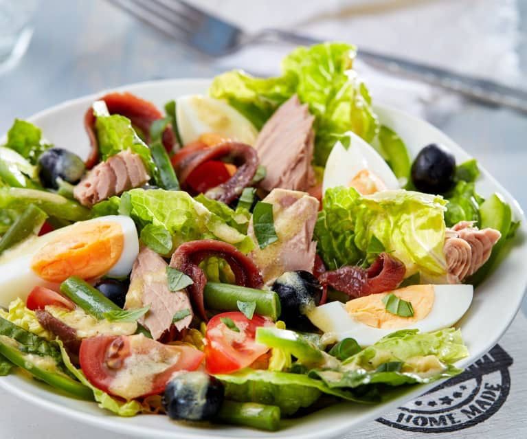
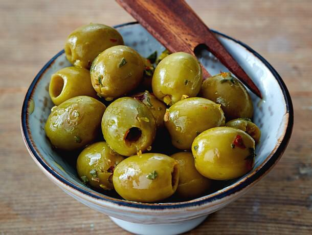
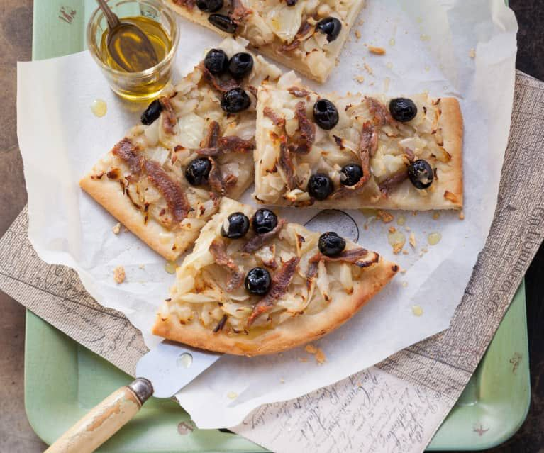

Die Gastronomie in Nizza
In Nizza ist die Gastronomie eine Institution. So sehr, dass die Hauptstadt des Gebietes Alpes-Maritimes 1998 das Label Cuisine Nissarde gründete, um ihre traditionellen Rezepte zu bewahren. Hier ist die Küche eine Kultur. Pissaladière, Suppe mit Pesto oder Salade niçoise, diese Spezialitäten der Stadt Nizza sind allen bekannt. Während einer kulinarischen Reise an der französischen Riviera sind die Essensgewohnheiten sehr vielfältig und bestehen aus viel Gemüse, Fleisch, aromatischen Kräutern und Fisch. Wenn viele Rezepttitel "à la niçoise" sagen, ist dies weder eine Sauce noch eine Zubereitungsmethode jeglicher Art, denn jedes Gericht ist einzigartig.
 1. Der unumgängliche Salade Niçoise
Die Salate werden oft nach den Wünschen garniert, mit Ausnahme des Salade Nicoise, bei dem nichts dem Zufall überlassen wird. Wenn er viele Zutaten enthält, sind diese präzise: Tomaten, Paprika, Sellerie, Radieschen und junge mediterrane Zwiebeln. An dieser Basis werden gekochte Eier, Oliven und Basilikum hinzugefügt. Thunfisch und Sardellen, die in diesem Gericht unerlässlich sind, verleihen der Marine einen mediterranen Touch. Aber um Himmels willen, keine Bohnen, keine Kartoffeln, geriebene Karotten, rote Rüben oder Endivien!
2. Der Pan Bagnat
Das traditionelle touristische "Gemüse-Sandwich" von Touristen der Vergangenheit ist ebenfalls berühmt geworden. Mit den gleichen Elementen wie der Salat niçoise wird der Pan Bagnat in ein rundes Brötchen gegeben, reichlich geölt; er wird kalt gegessen (ohne Mayonnaise oder Huhn!) Aber hüten Sie sich vor den Nachahmungen, die Sie manchmal in der Stadt finden.
3. Die "Daube Nicoise": ein Sommer- und Wintergericht
Der Daube niçoise ist ein Eintopf, der ein bisschen wie der Rinderbourguignon ist, den Sie im Winter essen, aber seien Sie sich bewusst, dass es keine Jahreszeit gibt, um einen Daube zu probieren. In Wein gekochtes Rindfleisch wird oft von einer anderen Spezialität der Stadt begleitet, den Gnocchi. Sie werden mit einer Mischung aus Weizenmehl und Kartoffeln zubereitet.
4. Die "Gnocchi à la niçoise"
Kartoffelgnocchi sind kleine Knödel aus Kartoffelmehl und Ei, die in Wasser gekocht und mit einem Schuss Olivenöl oder einer Sauce Ihrer Wahl (mit Cepescreme, Pesto usw.) verkostet werden. Verlassen Sie Nizza und Südfrankreich nicht ohne Verkostung; es ist köstlich.
5. Die Ravioli
In Nizza mischt man nicht alles! Ravioli aus Nizza werden ausschließlich mit Mangold und Rindfleischeintopf hergestellt. Und es ist das Kochen des Eintopfs, das die Sauce liefert. Lachs, Ricotta, Käse und andere exotische Zutaten sind absolut zu verbieten.
6. Die Pissaladière
Hergestellt aus Brotteig ist dieser Kuchen nicht mit Pizza zu verwechseln, da er keine Tomaten enthält. Andererseits wird es mit Zwiebeln "Kompot" und Sardellen garniert und mit Niçoises-Oliven dekoriert. Es ist in fast allen Bäckereien im Alten Nizza zu finden. Eine Mahlzeit für unterwegs, ideal zum Mittagessen.
7. Salzig oder süß: der Mangoldkuchen "Tarte aux Blettes"
Der Mangoldkuchen wird als Vorspeise und Dessert verwendet. Nur wenige Zutaten ändern sich in der Zubereitung. Das salzige Rezept ist mit einer Mischung aus Reis, Mangold und geschlagenen Eiern gefüllt. In der süßen Version wird der Mangold mit Paniermehl, Apfelstücken, Trauben und Parmesankäse oder Sbrinz, einem Schweizer Hartkäse aus roher Kuhmilch, serviert. Alles wird in Kuchenteig gewickelt.
8. Stockfisch à la niçoise, "das Gericht der Alten".
Stockfisch besteht aus Fischdärmen und wird nicht von allen Menschen geschätzt. Es ist ein besonderes Gericht, aber in Nizza sehr beliebt, besonders bei den Älteren. Getrockneter Schellfisch wird eine Woche lang mit fließendem Wasser dehydriert. Er wird dann mit Tomaten und Kartoffeln geschmort.
9. Das Socca
Während Pizza, geboren italienisch, international geworden ist, ist das Socca, ein beliebtes Gericht, typisch geblieben und es gibt kaum andere Orte, um es zu genießen. Sie können das echte Socca am Stand einiger Pubs und der Märkte im alten Nizza kaufen. Es wird mit einem Halbmondmesser in 5 bis 6 cm Breite geschnitten und mit einer Prise Pfeffer bestreut. Vor allem sollten es heiß gegessen werden.
10. Die niçoise Oliven und das Olivenöl
Nizza ist das Land der Cailletier, eine Olive, die für ihren außergewöhnlichen Geschmack weltberühmt ist.
Nur wenige Städte haben so viele kulinarische Spezialitäten. Nizza hat es geschafft, seine Kultur auch in den Tellern zur Freude der Feinschmecker zu entwickeln und zu bewahren. Aber wir können das berühmte Essen von Nizza nicht durch eine so kleine Liste von Gerichten wie die "Suppe au pistou", die Pfanne Bagnat und den Salat niçoise wieder aufnehmen. Nizza ist ein Teil der französischen Küche, aber auch ein Teil der mediterranen Küche; es geht um frisches Gemüse, Auberginenzucchini, Mangold, Olivenöl. Das macht die lokale Küche in Nizza aus.
